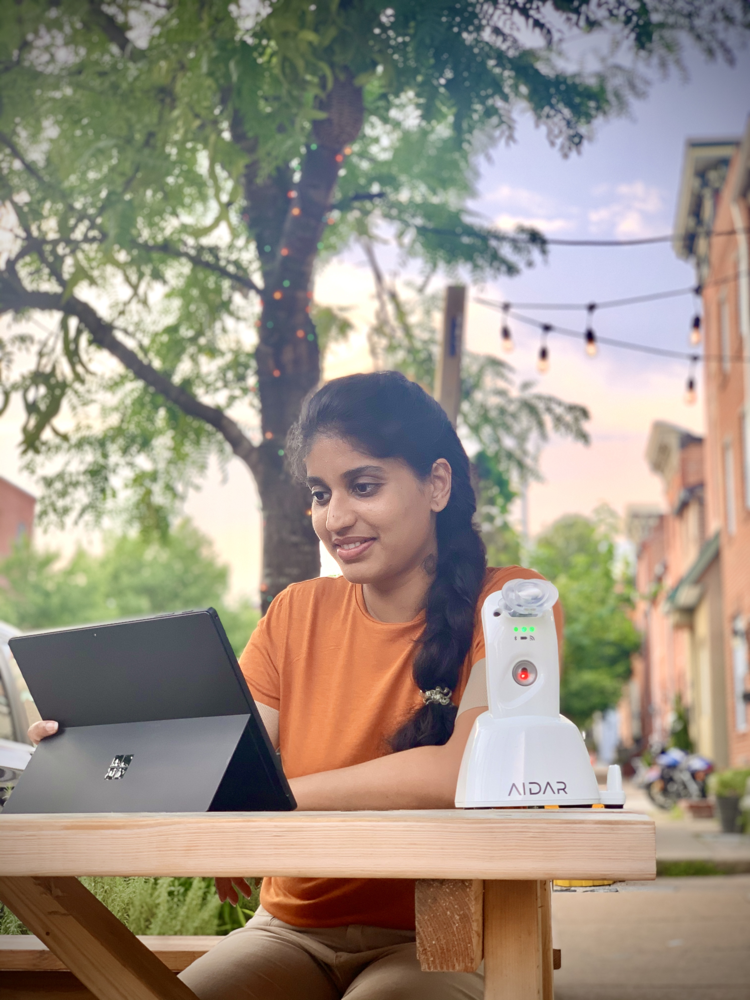

The Operations Issue · Co-Founder & COO, Aidar Health
From bedside to the boardroom.
Jenny Mathew is the operational force behind Aidar Health. With 20+ years of clinical nursing experience and a Johns Hopkins MBA, she is building the systems that make "the check engine light for humans" a clinical reality.
- Johns Hopkins MBAStrategy
- 20+ YearsClinical
- CNO → COOLeadership

The Clinical-Operational Bridge
Technology should serve the patient, not the other way around. I build the systems that protect the patient's journey.

I spent 20 years at the bedside. I know what happens when data arrives too late, or when tools are too complex for a nurse to use under pressure.
i. Experience
The bedside is the ultimate test.
My background as a Registered Nurse is the foundation of everything I do at Aidar. I ensure our technology doesn't just work in a lab, but thrives in the hands of a busy clinician.
ii. Transition
CNO to COO: Scaling Clinical Value.
As Aidar's former Chief Nursing Officer, I protected the clinical integrity of our products. As COO, I now operationalize that value across entire health systems and long-term care networks.
iii. Vision
Operationalizing Compassion.
Through my MBA at Johns Hopkins Carey, I learned to scale clinical empathy. We are building the operational backbone for a future where chronic conditions are managed, not just treated.
Execution is the heart of care.
Operations
National Deployment.
Clinical Precision.
Scaling MouthLab™ involves coordinating complex supply chains, managing FDA quality standards, and ensuring every healthcare provider is trained for success.
- MouthLab™ Global Ops
- FDA Quality Management
- Clinical Strategy
- Commercial Scale
- Provider Enablement
- Regulatory Compliance
- Product Lifecycle
Operational loop
-
01
Clinical Onboarding
Integrating MouthLab into existing nursing workflows with a focus on ease of use and immediate data utility.
-
02
Global Supply Chain
Managing the manufacturing and distribution of medical devices to providers across the country.
-
03
Commercial Scale
Building the systems that support Aidar's growth from a startup to a national healthcare partner.
— Journey
From Bedside to Boardroom.
Bridging clinical care and business strategy for over two decades.
Foundation · 2005-2015
Clinical Excellence & Education.
Over 20 years of experience in clinical nursing and healthcare leadership. Earned an MBA in Leadership and Business Strategy from the **Johns Hopkins University - Carey Business School**, setting the stage for executive leadership.
Leadership · 2018-2021
Chief Nursing Officer.
Co-founded Aidar Health and served as Chief Nursing Officer (CNO). Focused on the clinical integrity of MouthLab™ and ensuring the technology met the highest standards of patient care and regulatory compliance.
Scale · 2022-Present
Chief Operating Officer.
Transitioned to COO to lead Aidar's global operations, clinical strategy, and commercial scale. Overseeing the national rollout of MouthLab™ and building the operational infrastructure for the future of digital medicine.